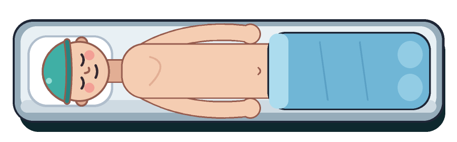
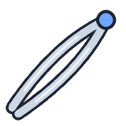
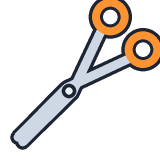
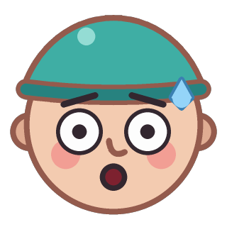
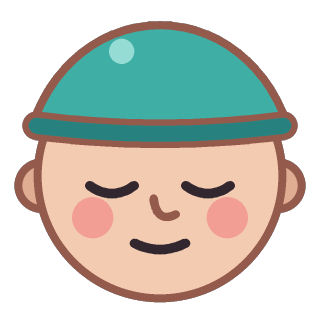
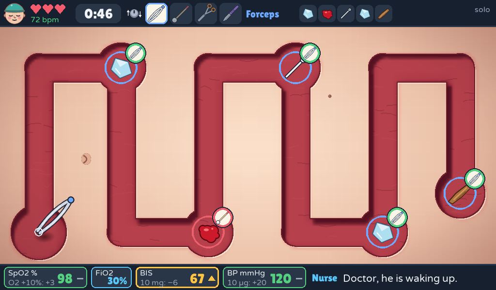
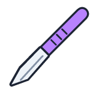
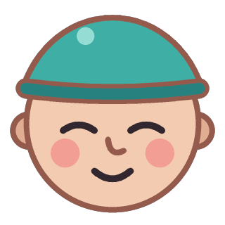
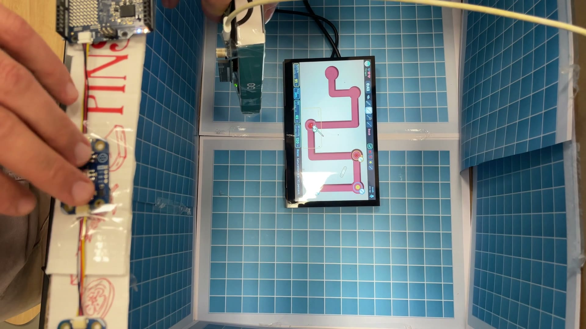
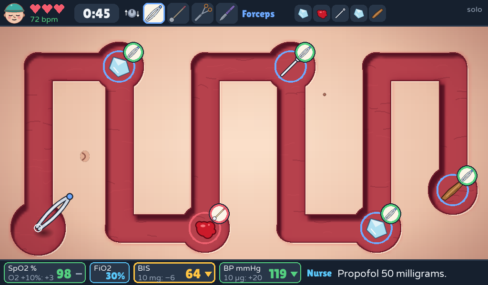

A surgeon trainer you steer by hand and talk to. Fully offline on the Arduino UNO Q.

Team Steady HandsSpeech-to-Speech Hackathon · Nürnberg14 Nov 2026
Hi, we are team Steady Hands. This is our surgeon trainer: you steer with your hand and talk to it. Game, speech recognition, AI and voices all run offline on the Arduino UNO Q in front of you.
In surgery, both hands are busy
So the surgeon works by voice, and keeps the hand steady while talking.
1

Steady hand
Precise movement through a narrow wound, against the clock.
2

Clear calls
Instruments are called by name, and the team hands over exactly that one.
3

Orders with a dose
Drug and amount for the anaesthesia nurse, without letting go of the instrument.

Steady Hands trains all three at once, in one-minute rounds. For medical students in the skills lab. No voice leaves the board.
In an operating room, the surgeon's hands are busy. Three things have to work at once: a steady hand, clear calls for instruments, and orders to the anaesthesia nurse, with a drug and a dose. Steady Hands trains all three in one-minute rounds, for medical students in the skills lab.
One round
Beat the clock: pull the splinter, clamp the bleeding, swab the blood.

On the board's display: level 4, the anaesthesia is getting too light.

Steer
Move the remote. Touch a wall: buzz, pulse up. Three touches wake the patient.
Call
Surgeon“Clamp!”
Each target needs its own. Co-op: the assistant hands it over with the knob.
Order
Surgeon“Propofol 50.”
Nurse“Propofol 50 milligrams.”

Score
Time, wall contacts, steadiness, orders right. Six levels.
A round: clear the wound before the clock runs out. You steer the instrument with this remote. Touch a wall and it buzzes, the pulse goes up; three touches and the patient wakes up. Each target needs its instrument, so you call it: "Clamp!" In co-op mode your partner picks it with the knob and hands it over. From level two on, the monitor goes wrong: here the nurse says "Doctor, he is waking up". You order a drug and a dose, and she reads it back. At the end: time, contacts, steadiness, orders right.
One round, live on the board · 0:45

Demo · 0:45
Save the video as pitch/media/demo.mp4 and reload.
Space: play / pause · → next slide
"Here is one round on the board, with sound." Then stay quiet: the video runs 45 seconds. What happens in it: the remote steers, no tilting; the surgeon calls "Swab!", "Clamp!", "Forceps!"; the nurse says "Saturation is at 91 percent" and the surgeon orders oxygen; a wall touch, the patient says "Hey, careful!"; a dark zone lights up when the assistant presses the knob. Space pauses and plays, the arrow key or the clicker moves on.
The scalpel measures two distances
The hand moves in a plane. Two laser sensors measure how far it is from two walls.
Each sensor measures one direction only, so it takes two.
The instrument follows the hand
→Hand rightX grows
←Hand leftX shrinks
↓Hand downY grows
↑Hand upY shrinks
Only the change counts
The tool carries on from where it stands, so the frame never has to line up with the screen.
Freeze key
Hold it, bring the hand back, let go. Like lifting a mouse off the pad.
Before: a tilt sensor in the handle. Now: two Modulino Distance (laser time of flight) on a second UNO Q, which sends 50 frames a second over UDP to the game board.
How do you steer without a joystick? We started with a tilt sensor, but surgeons don't tilt, they move. Now the remote carries two laser distance sensors: one measures the distance to the side wall, one to the top wall. Move right, X grows, the instrument goes right. Only the change counts, so the frame never has to line up with the screen. Hold the freeze key to bring your hand back, like lifting a mouse. The remote is a second UNO Q.
Two speech paths that never cross
Every model runs on the board. A short call goes to a tiny grammar, an order with a dose to a tool-calling model.
No drug named: no order, no model runInvented numbers are droppedVoices: Piper, rendered once at setup
Under the hood there are two speech paths, and every model runs on the board. Commands like "Clamp!" go to Vosk, with a vocabulary of only our command phrases: decided in under a tenth of a second. Orders with a dose need more. Cactus Whistle transcribes the sentence, and Needle, a tiny tool-calling model, turns it into function calls: give propofol, 50 milligrams; set oxygen to 70 percent. The two paths never fire each other's words, and without a drug name Needle does not even run.
A keyword can't read a dose

Read the monitor
BIS75
Too light by30
Dose card on the tile10 mg : −6
Order“Propofol 50.”
Too little
Nurse“BIS still at 63.”
Give more: titrating counts as right.
Right amount
Nurse“He is stable again.”
Back in range.
Too much
Nurse“He is too deep now, doctor.”
Overshoots into the opposite alarm.
No number
Nurse“Standard dose.”
Fits about half the time.
Three drugs, three tools: oxygen in percent, propofol in mg, adrenaline in µg. Needle also takes corrections: “Propofol 20, no wait, 30.”
Why a tool call and not keywords? Because the dose matters. Each tile shows a dose card: BIS 75 is 30 too light, 10 milligrams lower it by 6, so you order "Propofol 50". Too little and you give more, too much and he is too deep. No number gets the standard dose, which fits only half the time.
Light enough for the UNO Q
On the game board (UNO Q, 3.7 GB RAM), full game running, 14 Nov 2026.
RAM in use, peakwhile playing1.4GB/ 3.7
Speech modelsall three, on disk127MB
Voice commandend of speech to command< 0.1s
Order with a doseNeedle, median per order1.9s
Orders read rightdrug and amount, test set40/ 42
False ordersfrom 14 sentences of talk0/ 14
Fine-tuningNeedle cut to 12 of 20 layersnone
Audio stored or sentoffline, telemetry offnone
Two UNO Q boards. On the game board the MCU reads knob and buttons and sends 50 frames a second over the Bridge; Linux runs game, voice, sound and the 7-inch display. Needle: the published weights, cut with the Cactus build tool to the smallest rung that passed our bar. Test sentences from one author; real speakers are next.
And it all fits on the board. While playing, the game board uses at most 1.4 of its 3.7 gigabytes of RAM; the three speech models together take under 130 megabytes. A command takes under a tenth of a second, an order with a dose about two seconds. Needle reads 40 of 42 test orders right and turns no plain talk into an order. We did not fine-tune: Needle is the published model, cut to 12 of its 20 layers. And no audio is stored or sent.
What's next
Real voices
Test with medical students in a skills lab, with real room noise.
Fine-tune if needed
Train Needle only if those tests show misses.
More scenarios
A new drug is one more tool on the same monitor.
Thank you!
Steady hand, clear calls, the right dose. All offline.
Next: tests with medical students and real voices, fine-tuning only if those show misses, and more scenarios: each new drug is one more tool. Steady Hands: a steady hand, clear calls, the right dose. All offline. Thank you!